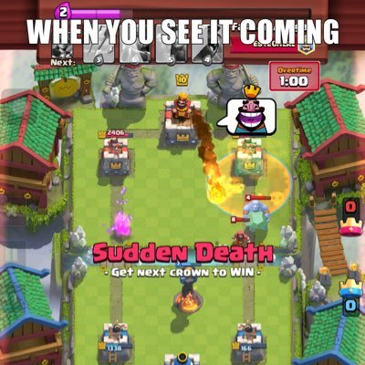
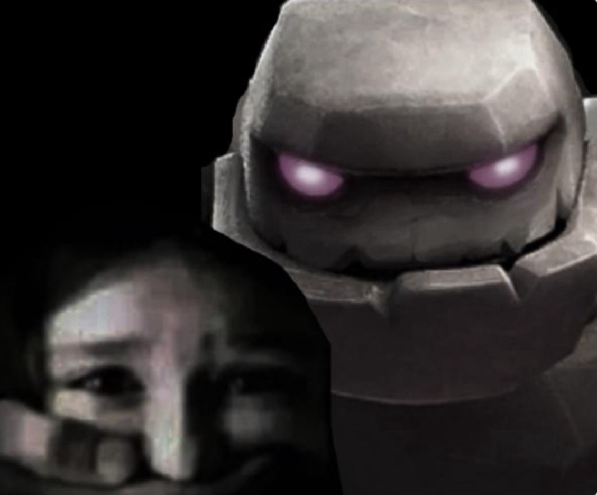
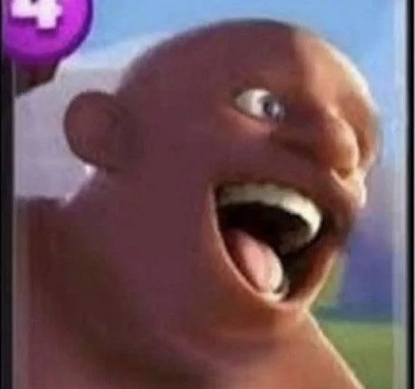
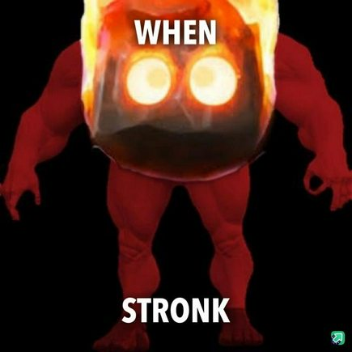
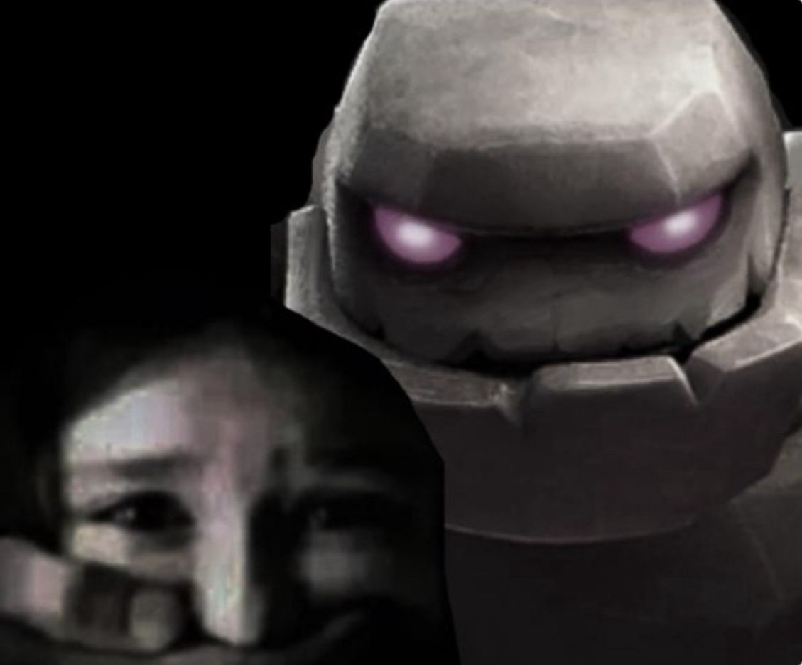
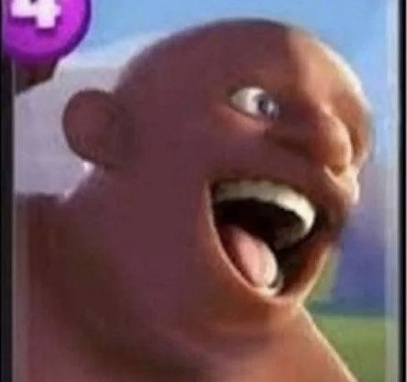
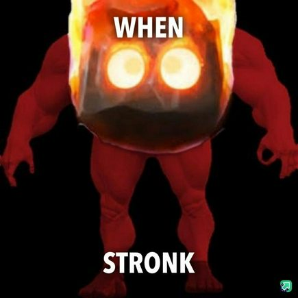
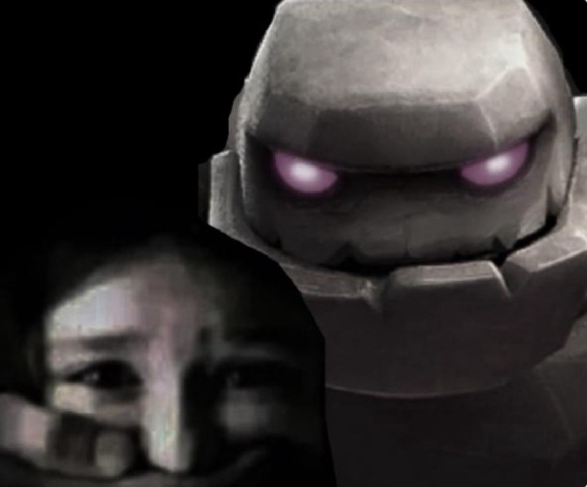
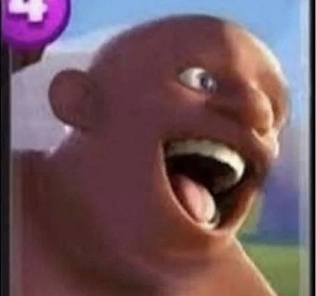
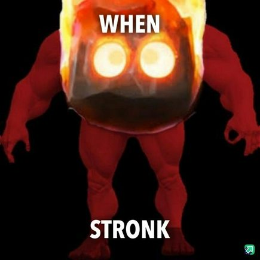

Mega Knight 💥

10 ton czystego betonu i testosteronu – gdy spada na arenę, ziemia drży!
Wywiad z TikTokerem Papryk 🎤
Przeprowadziliśmy wywiad ze znanym tiktokerem o nazwie Papryk, który wyraził opinię na temat Mega Kloca:
„Mega Kloc sam w sobie jest dobrą kartą i trzeba zużyć na niego dużo eliksiru, żeby go obronić, więc jest dobry. Te słowa zostaną zapamiętane w naszych sercach.”
Wywiad z Paprykiem – Część 2 🎯
Kontynuujemy rozmowę z legendarnym graczem i twórcą – Paprykiem!
- 1️⃣ Jaka jest Twoja ulubiona karta w Clash Royale?
- 2️⃣ Jakich graczy w Clash Royale najbardziej nie lubisz?
- 3️⃣ Jakbyś miał dodać nową kartę – jak by się nazywała i jak by działała?
- 4️⃣ Czy chciałbyś usunąć jakąś kartę z Clash Royale?
- 5️⃣ Jakie Evo według Ciebie jest najlepsze?
- 6️⃣ Czy jest jakieś Evo, które Twoim zdaniem nie ma sensu?
- 7️⃣ Jeśli miałbyś dać buffa lub downgrade – jakiej karcie byś to dał?
Krótki wiersz o Papryku ✨
Papryk na arenie to gracz doskonały,
Każdy jego ruch – przemyślany, wspaniały.
Gdy Mega Kloc spada, świat lekko drży,
A Papryk spokojnie – już plan ma w głowie, czyżby?
Pozdrowienia 💌
Pozdrawiamy Cię, Papryku – od wszystkich fanów Mega Kloca i Clash Royale! Twoje filmy uczą, bawią i inspirują 💪
💬 Kochany Papryku, na ile oceniasz moją stronę?
Memy z Clash Royale 😂


 








Śmieszne żarty o Mega Klocu 😂
- Dlaczego Mega Kloc nie chodzi do szkoły? Bo wszyscy boją się jego spadku na klasę!
- Co mówi Mega Kloc, gdy wchodzi na arenę? „Uważaj, zaraz zrobię dziurę w ziemi!”
- Dlaczego Mega Kloc nie używa windy? Bo woli spadać z górki!
- Jak Mega Kloc wita innych wojowników? „Hej, nie bądźcie kruchy!”
- Co robi Mega Kloc w wolnym czasie? Buduje zamki z własnych kawałków betonu!
- Dlaczego Mega Kloc nie potrzebuje siłowni? Bo każda walka to trening na 10 ton!
- Co Mega Kloc mówi do rycerzy? „Nie dotykajcie mojej strefy lądowania!”
- Dlaczego karty boją się Mega Kloca? Bo nawet eliksir nie może go zatrzymać!
- Jak Mega Kloc relaksuje się po walce? Robi sobie drzemkę w kraterze, który sam zrobił.
- Co mówi Mega Kloc, gdy przegrywa? „Nie martwcie się, beton powróci!”
- Dlaczego Mega Kloc nigdy nie gubi się na arenie? Bo każdy krok zostawia ślad 10 ton betonu.
- Co Mega Kloc mówi na urodzinach? „Nie dmuchaj świeczek, użyj eliksiru!”
- Dlaczego Mega Kloc jest najlepszym przyjacielem budowniczych? Bo zawsze trzyma wszystko w ryzach… betonowo.
- Co Mega Kloc robi na wakacjach? Buduje piaskowe fortece… z prawdziwego betonu!
- Dlaczego Mega Kloc lubi grać w szachy? Bo każdy ruch jest ciężki jak on sam!